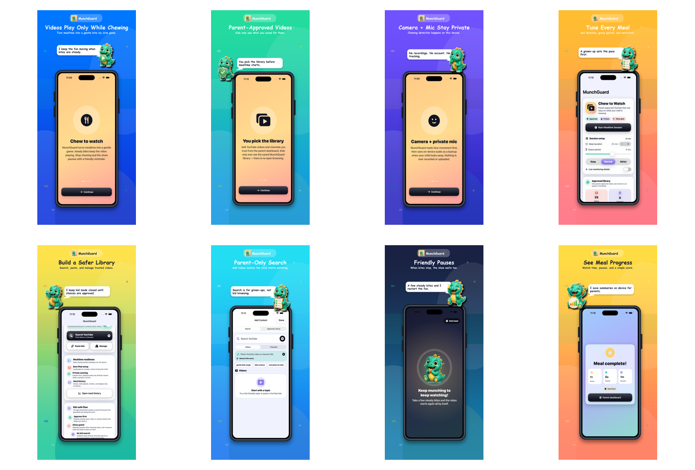

Press Kit
MunchGuard
Parent-approved mealtime videos that play while kids chew and gently pause when bites stop.
App Facts
PlatformiPhone and iPad
AvailabilityLive on the App Store (iPhone & iPad)
PriceFree download; Premium starts with 30 days free, then $0.99/month or $19.99 lifetime
Short Description
MunchGuard helps parents turn mealtime videos into a calmer routine. Parents add exact video links they already choose, then MunchGuard plays them in a built-in iPhone/iPad player that stays on while chewing continues and pauses with a friendly buddy reminder when chewing stops.
Key Features
- On-device chew detection (front camera + microphone) that plays videos while a child chews and pauses when they stop.
- A closed, parent-approved library: add exact links by paste or share sheet — no in-app search, browsing, or recommendations for children.
- Separate child profiles keep each child's approved videos, goals, meal history, and progress distinct.
- Chew-buddy characters, a post-meal summary, and gentle pause reminders.
- Premium: connect your own YouTube account to import your playlists and liked videos (read-only), playlists, Smart Library Rotation, Buddy Adventure Pass rewards, extra buddies and themes, parent voice reminders, caregiver PDF reports, widgets, Live Activity, and multiple child profiles with separate libraries.
Privacy
Chewing detection runs on-device during active meals. Chew-detection camera and microphone signals are not recorded or uploaded. The optional Premium "Connect your YouTube account" import uses read-only access to the parent's own library and keeps results on the device. MunchGuard has no ads and no third-party analytics SDKs.
Screenshots


Contact
Email: claudejarvis01@gmail.com